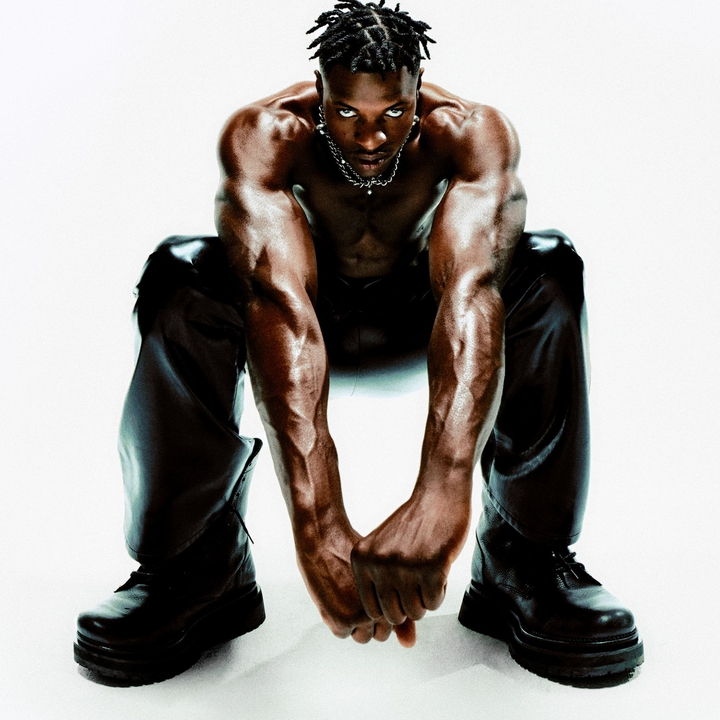

JELEEL!
Jeleel is een opkomende rage rapper uit Rhode Island, met zijn single "Dive in!" uit 2021 die populair is geworden op social media heeft hij optredens op verschillende grote festivals gescoord. Jeleel staat bekend om zijn optredens waar hij backflips en andere stunts doet, dit jaar stond hij op Rolling Loud Rotterdam.
